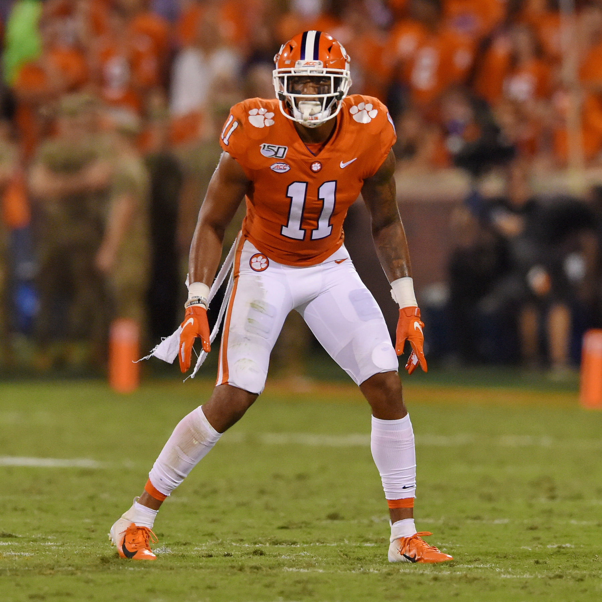
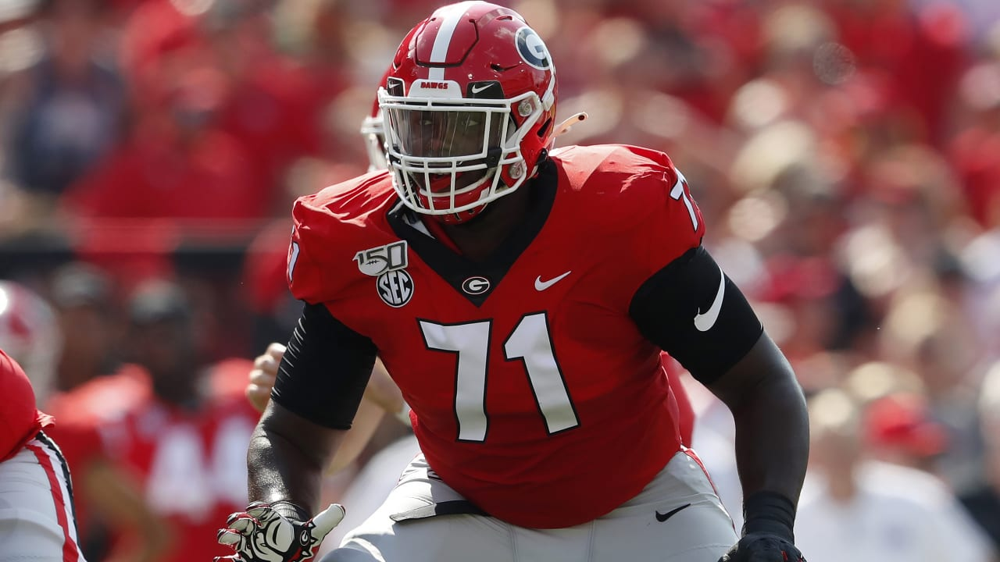
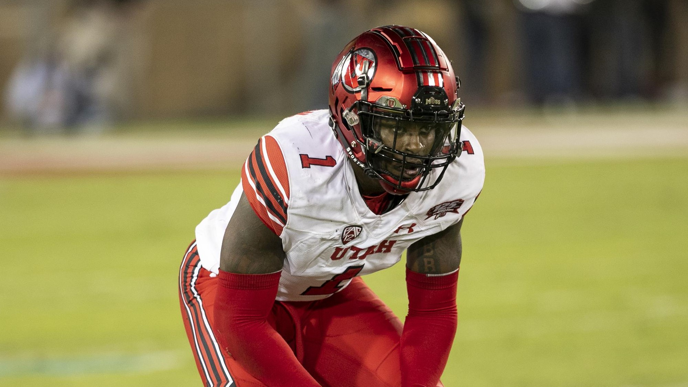

Colten Cowell
Colten Cowell
5/23/2020
Top Five Schools With The Most Picks in 2020 NFL Draft
The 2020 NFL Draft is in the books and several players saw their names called during this special
3 day event. Players were filled with emotion when they hear their phone ring and hear a voice on the other end of the line says
"We would like you to be a part of our organization." More importantly not only are the players happy to be selected, but their
respective universitys and college coaches are just as excited. Hearing more and more players being drafted from a particular school can
do wonders for a team's image, recruiting, and reputation. Last but not least it also gives rival schools bragging rights about who
put more players into the NFL.
You can find the list of top schools that had the most number of players drafted in this year's draft and see if your favorite school
made the cut.
- (6) Auburn Tigers & Notre Dame Fighting Irish
- (7) Clemson Tigers, Florida Gators, Georgia Bulldogs & Utah Utes   
- S Brian Cole II, Mississippi State
- DE Kenny Willekes, Michigan State
- CB Bryce Hall, Virginia
- WR K.J. Hill, Ohio State
- DE Curtis Weaver, Boise State
- OT Prince Tega Wanogho, Auburn
- DE Bradlee Anae, Utah
- OG Netane Muti, Fresno State

Auburn Tigers: 6 picks
DT Derrick Brown
(7) - Carolina Panthers
CB Noah Igbinoghene
(30) - Miami Dolphins
DT Marlon Davidson
(47) - Atlanta Falcons
OG Jack Driscoll
(145) - Philadelphia Eagles
S Daniel Thomas
(157) - Jacksonville Jaguars
OT Prince Tega Wanogho
(210) - Philadelphia Eagles

Notre Dame Fighting Irish: 6 picks
TE Cole Kmet
(43) - Chicago Bears
WR Chase Claypool
(49) - Pittsburgh Steelers
OLB Julian Okwara
(67) - Detroit Lions
CB Troy Pride Jr.
(113) - Carolina Panthers
DE Khalid Kareem
(147) - Cincinnati Bengals
S Alohi Gilman
(186) - Los Angeles Chargers
Clemson Tigers: 7 picks
OLB Isaiah Simmons
(8) - Arizona Cardinals
CB A.J. Terrell
(16) - Atlanta Falcons
WR Tee Higgins
(33) - Cincinnati Bengals
S Tanner Muse
(100) - Las Vegas Raiders
OG John Simpson
(109) - Las Vegas Raiders
S K'Von Wallace
(127) - Philadelphia Eagles
OG Tremayne Anchrum
(250) - Los Angeles Rams
Florida Gators: 7 picks
CB C.J. Henderson
(9) - Jacksonville Jaguars
WR Van Jefferson
(57) - Los Angeles Rams
DE Jabari Zuniga
(79) - New York Jets
OLB Jonathan Greenard
(90) - Houston Texans
RB La'Mical Perine
(120) - New York Jets
WR Freddie Swain
(214) - Seattle Seahawks
WR Tyrie Cleveland
(252) - Denver Broncos

Round Taken: Round 7
Team Drafted By: Minnesota Vikings
Actual: 249
Projected: 171.5
Difference: 77.5

Round Taken: Round 7
Team Drafted By: Minnesota Vikings
Actual: 225
Projected: 144.8
Difference: 80.2

Round Taken: Round 5
Team Draftd By: New York Jets
Actual: 159
Projected: 73.5
Difference: 85.5

Round Taken: Round 7
Team Drafted By: Los Angeles Chargers
Actual: 220
Projected: 122.9
Difference: 97.1

Round Taken: Round 5
Team Drafted By: Miami Dolphins
Actual: 165
Projected: 64.6
Difference: 100.4

Round Taken: Round 6
Team Drafted By: Philadelphia Eagles
Actual: 210
Projected: 103.5
Difference: 106.5

Round Taken: Round 5
Team Drafted By: Dallas Cowboys
Actual: 180
Projected: 72.4
Difference: 107.6

Round Taken: Round 6
Team Drafted By: Denver Broncos
Actual: 181
Projected: 67.4
Difference: 113.6